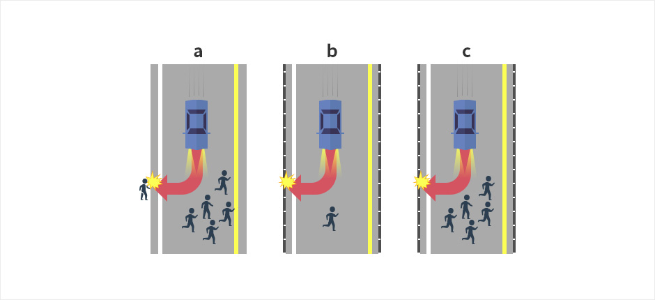

Search
Change
자율주행차가 가져올 일상의 변화는 무엇일까? 흔히 교통사고의 90%는 운전자의 인적오류로 발생한다고 하므로 자율주행차가 가까운 미래에 상용화된다면 교통사고는 급감하고 도로 위에서 차량소통도 더욱 원활해 질 것으로 보인다. 운전자 또한 자율주행차에 탑승하는 경우, 목적지로 이동 중에 자유롭게 독서를 하거나 영화를 보거나 심지어는 수면을 취할 수도 있어 무척이나 편리하고 쾌적한 이동수단으로 자리매김 할 수 있을 것이다. 수많은 새로운 기술적 발명품들이 그러하듯, 자율주행 자동차 시스템 역시 여러 가지 윤리적 문제에 대한 논란이 일고 있다. 최근 논란이 되고 있는 자율주행차의 윤리적 문제를 한번 고민해보자. 운전자는 윤리적 딜레마가 되는 교통상황에 직면하게 되면 어떠한 이유로든 자신의 운전에 대한 책임을 본인이 감당하여야 한다. 운전자 본인이 법적, 금전적 책임을 감수할 뿐 아니라 누군가 상해를 입히게 되는 경우에는 도덕적인 책임, 즉 자신의 행위에 대한 죄책감 또한 갖게 된다. 그렇다면 자율주행차는 어떠한가? 윤리적 딜레마 상황이 발생하여 자율자동차로 하여금 누군가를 희생하도록 선택하여야 한다면 어떤 알고리즘을 통해서 이러한 윤리적 딜레마를 해결할 수 있을 것인가? Problem
안전과 법적·윤리적 측면에서 글로벌 기준이 명확히 마련되지 않으면 자율주행차의 완전 상용화가 어려울 것이란 시선도 있다. AI가 운행하는 차가 더 안전할 것이라는 믿음 자체가 틀렸다는 지적이다. 2016년 구글 웨이모 자율주행차는 차선 변경 도중 옆 차로의 버스가 양보할 것으로 오판해 충돌 사고를 일으켰다. 테슬라 모델S는 흰색 트레일러를 장애물이 아닌 ‘밝게 빛나는 하늘’로 인지하면서 브레이크를 밟지 않아 인명사고를 냈다. 잇따른 인명 사고에 그동안 선점 경쟁을 펼쳐온 테슬라, GM, 웨이모 등 자율주행 업체들은 상용화 목표 시점을 늦추는 분위기다. 자율주행 상용화는 운행 기술, 교통 법규, 소비자 선택이라는 세 가지 고비를 넘어야 하는데, 첫 단계인 기술에서 안전성을 더욱 중시하게 된 것에 따른 후속 조치로 풀이된다. 모건스탠리는 2018년 9월 ‘기술적 지연’을 이유로 웨이모의 기업 가치를 1년 만에 40% 낮춘 1050억달러(129조원)로 평가했다. 자율주행 AI의 윤리적 문제는 사회적 합의만 없을뿐, 결국 차를 만드는 업체들이 어떤 알고리즘을 짜느냐에 달렸다. ‘딥러닝’ 기반 AI가 도덕관을 포함한 판단까지 스스로 학습하면 결국 사람의 판단과 다르지 않다는 주장이다. 최강림 KT 커넥티드카 비즈센터장은 "AI가 스스로 윤리적 판단을 내린다는 개념에서 벗어나야 한다"며 "수많은 테스트를 거치고 대량의 데이터를 확보해 AI가 사람처럼 판단할 수 있도록 학습시키는 것이 중요하다"고 강조했다. 자율주행차의 윤리적 판단에 따른 사고 발생 시 법적 책임 소재도 풀어야할 과제다. 2018년 3월 미국의 한 보행자는 우버 자율주행차와 부딪쳐 사망했다. 탑승 직원과 제조사인 볼보 중 누가 책임이 있는지 논란이 됐다. 미교통안전위원회(NTSB)는 장기간 조사 끝에 사고 원인을 우버, 안전 담당 탑승 운전사, 피해자, 애리조나 주 공동 책임으로 돌렸다. 산업을 제대로 규제하지 못한 미 연방정부도 이에 대한 책임을 지도록 했다. 이에 사람의 조작을 완전히 배제한 ‘레벨5’ 수준 자율주행차를 제조사가 상용화하지 않을 것이란 전망도 나온다. 미국 자동차공학회의 분류에 따르면 레벨 1~2는 ‘운전자 지원 기능’이 탑재된 차량이다. 레벨 3를 ‘부분 자율주행’, 레벨 4를 ‘조건부 완전 자율주행’, 레벨 5를 ‘완전 자율주행’으로 구분한다.Solution
이번에는 ‘자율주행차의 윤리적 딜레마’를 다른 관점에서 한번 살펴보자. 만약 a상황에서 가드레일에 위치한 보행자가 어린 아이고 10명의 보행자는 모두 나이든 노인들이라면, 또는 그 어린아이가 탑승자의 자녀이거나 10명의 노인 중에 내 부모가 포함되어 있다면 탑승자는 단순히 보행자 숫자의 많고 적음에 따라, 아님 자신의 안위에 따라 동일한 결정을 내릴 수 있을 것인가? 자율주행차의 윤리적 딜레마는 이처럼 단순히 ‘최대다수 최대행복’이라는 공리주의 명제로만은 쉽사리 해결되지 않음에 분명하다. 한편, 우리가 인류 보편적인 속성으로 믿고 있는 윤리가 단지 행위자 개인의 도덕적 또는 당위적 신념이나 태도라면 심리학적 관점에서 모든 인간은 항상 자신의 도덕적 신념이나 태도와 일치하게 행동하는 걸까? 물론 우리 중에 누군가는 자신을 희생하더라도 단 한 명의 사람도 희생하고 싶지 않는 사람이 존재 할 수 있겠으나 대다수 사람들은 자신의 도덕적 신념 보다는 이에 반하더라도 본능적으로 자신의 생명을 살리기 위한 방향으로 운전할 가능성이 높다는데 동의할 것이다. 결과적으로 우리 인간은 자신의 생명이 위협받는 윤리적 딜레마 상황에서 자신이 옳다고 믿는 윤리적 신념과 실제 행동간의 불일치(discrepancy)를 피하기 어려운 존재이다. 따라서 자율주행차의 윤리적 딜레마를 해결하기 위한 하나의 알고리즘으로서 인간의 보편적 윤리나 사회적 합의를 인간 본성이 갖는 경험적 기준으로 정의할 것인지 또는 윤리적 신념에 의한 당위적 기준에 따라 정의할 것인지에 대한 충분한 논의가 필요하겠다.